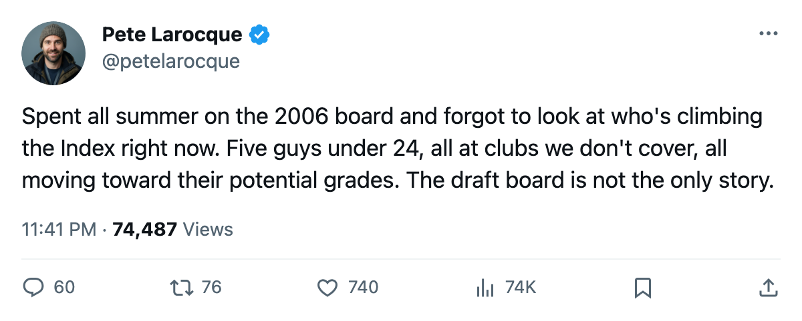
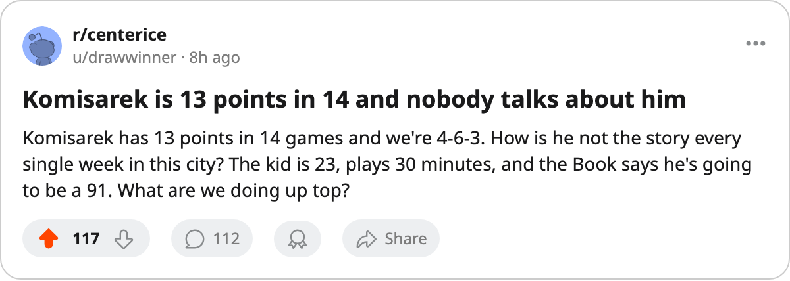

Five Young Risers Nobody Covers on Draft Night
The Development Index has five players under 24 climbing toward elite grades at clubs outside the usual prospect-coverage orbit.
 Pete LarocqueScouting editor · The Prospect File
Pete LarocqueScouting editor · The Prospect File
The Bureau's Development Index tracks current form on the overall. When a player's grade reads above the Book's base, he is climbing. When his potential still sits above that current grade, he has not yet reached what the Bureau thinks is his best version. Both conditions, under 24, at a club outside the usual prospect-coverage orbit: those five.
Five players meet every condition at clubs that drafted no one in the 2005 first round. None of them played a game from June's class. The Index has them moving, and the draft board has them invisible because the board follows the new names, not the old ones still growing.
| Player | Club | Pos | Age | Draft | Current | Base | Form | Potential | Gap | GP | Pts | MPG |
|---|---|---|---|---|---|---|---|---|---|---|---|---|
| [[player:42\|Shaone Morrisonn]] | BOS | D | 22 | 2001 #19 (R1) | 79 | 70 | +11 | 98 | 19 | 12 | 5 | 12.0 |
| [[player:217\|Mike Komisarek]] | MTL | D | 23 | 2001 #7 (R1) | 82 | 77 | +10 | 91 | 9 | 14 | 13 | 29.5 |
| [[player:1202\|Pascal Leclaire]] | CBJ | G | 23 | 2001 #8 (R1) | 91 | 83 | +9 | 93 | 2 | 8 | 62.3 | |
| [[player:1096\|Ales Hemsky]] | EDM | RW | 22 | 2001 #13 (R1) | 81 | 75 | +9 | 90 | 9 | 15 | 7 | 19.3 |
| [[player:911\|Pierre-Marc Bouchard]] | MIN | C | 21 | 2002 #8 (R1) | 79 | 74 | +9 | 87 | 8 | 16 | 5 | 17.7 |
The 19-point gap
Shaone Morrisonn72 Shaone Morrisonn, 22, carries the widest distance between his current grade and his potential: 79 to 98. Nineteen points of headroom, the largest in the group, on a +11 reading at the top of the risers list. He skates 12.0 minutes a night for  Boston Bruins and has 5 points in 12 games. The 2001 19th pick has three seasons behind him and a career stat line that does not look like a future top-pairing defenseman. The Index has the 98.
Boston Bruins and has 5 points in 12 games. The 2001 19th pick has three seasons behind him and a career stat line that does not look like a future top-pairing defenseman. The Index has the 98.
Boston sits at 8-3-2 with 20 points, second in the Northeast behind  Toronto Maple Leafs. Morrisonn plays on a team that wins, so the +11 may partly reflect winning hockey around him. The Index does not care whether the team helps. The number says he is better than the base model expected.
Toronto Maple Leafs. Morrisonn plays on a team that wins, so the +11 may partly reflect winning hockey around him. The Index does not care whether the team helps. The number says he is better than the base model expected.
The defenseman doing everything
Mike Komisarek81 Mike Komisarek is 23 and plays 29.5 minutes a night for  Montreal Canadiens. His form is +10, his overall 82 against a base of 77, his potential 91. He has 13 points in 14 games, which is a top-pairing pace for a defenseman at nearly 30 minutes. The 2001 7th pick was drafted to be that player. The Book's base of 77 says the Bureau did not expect him to arrive yet. The +10 says he is arriving early.
Montreal Canadiens. His form is +10, his overall 82 against a base of 77, his potential 91. He has 13 points in 14 games, which is a top-pairing pace for a defenseman at nearly 30 minutes. The 2001 7th pick was drafted to be that player. The Book's base of 77 says the Bureau did not expect him to arrive yet. The +10 says he is arriving early.
Montreal is 4-6-3 with 13 points, 4th in the Northeast. Komisarek's 13 points lead all U-23 defensemen in the league, ahead of  Jay Bouwmeester82 at
Jay Bouwmeester82 at  Florida Panthers (6 points, 9 games) and everyone else on the U-23 risers list. The Montreal record does not reflect it.
Florida Panthers (6 points, 9 games) and everyone else on the U-23 risers list. The Montreal record does not reflect it.
Two points from perfect
 Pascal Leclaire91 Pascal Leclaire has the smallest gap of the five: 2 points between his current 91 and his potential of 93. The 2001 8th pick has started 8 games for
Pascal Leclaire91 Pascal Leclaire has the smallest gap of the five: 2 points between his current 91 and his potential of 93. The 2001 8th pick has started 8 games for  Columbus Blue Jackets, who lead the Central at 21 points. His form sits at +9, the highest reading for a goaltender on the risers list.
Columbus Blue Jackets, who lead the Central at 21 points. His form sits at +9, the highest reading for a goaltender on the risers list.
At 23, Leclaire is at the threshold where the Book says he is almost fully formed. A 2-point gap is basically the last inch. The question for Columbus is whether the 93 is his ceiling or his floor.
Growth around bad teams
 Ales Hemsky75 Ales Hemsky is 22, at 81 with a potential of 90 at
Ales Hemsky75 Ales Hemsky is 22, at 81 with a potential of 90 at  Edmonton Oilers. He has 7 points in 15 games at 19.3 minutes a night. His form reads +9, matching Leclaire's and Bouchard's. Edmonton sits at 2-8-2 with 12 points, last in the Northwest. A player carrying +9 form on a team that wins 2 in 15 games is the development version of a good stat line on a bad team. The Bureau's model sees the growth. The record does not.
Edmonton Oilers. He has 7 points in 15 games at 19.3 minutes a night. His form reads +9, matching Leclaire's and Bouchard's. Edmonton sits at 2-8-2 with 12 points, last in the Northwest. A player carrying +9 form on a team that wins 2 in 15 games is the development version of a good stat line on a bad team. The Bureau's model sees the growth. The record does not.
Pierre-Marc Bouchard81 Pierre-Marc Bouchard is the youngest of the five at 21. His form is +9, his overall 79 against a potential of 87. He has 5 points in 16 games at  Minnesota Wild, skating 17.7 minutes a night. Bouchard was the 8th pick in 2002. Leclaire was the 8th pick in 2001. Same draft slot, one year apart. Leclaire has 2 points of headroom left. Bouchard has 8. The 2002 pick has more road to travel, and the Index says he is traveling it at the same rate as the 2001 man.
Minnesota Wild, skating 17.7 minutes a night. Bouchard was the 8th pick in 2002. Leclaire was the 8th pick in 2001. Same draft slot, one year apart. Leclaire has 2 points of headroom left. Bouchard has 8. The 2002 pick has more road to travel, and the Index says he is traveling it at the same rate as the 2001 man.
Minnesota sits at 4-7-3 with 15 points, 4th in the Northwest. Bouchard's +9 and 17.7 minutes a night put him in the middle of a rebuilding core that includes 2004 9th-pick Tuomo Pihlman78 at 76 overall with 13 points in 12 games. Two former top-10 picks on a 15-point team, both on the rise, and the Index says the pieces are forming even while the standings do not.
Why the draft board misses them
The Prospect File follows June's class because that is where new names enter the system. The mock drafts and the Junior Bureau grades they are built on: all of that is meant for men who have not been drafted yet. But the five players above were drafted three and four years ago. They already have sweaters. They already have ice time. They are climbing the Index at the same speed as any prospect on the board, and no one writes a mock-draft update about them because they are not on the board.
The 19-point gap on Morrisonn is larger than the gap between any two adjacent players on the Junior Bureau's 2006 top-10 list. The 13 points from Komisarek in 14 games is more than any 2005 first-rounder has scored this season. Leclaire's 91 current grade is higher than 14 of the 40 top potential players on the Junior Bureau's board. The development happening inside the league's existing rosters is not slower than the development on the board. It is just invisible to the coverage that follows the board.
The Index has them at +9, +10, +11, and the numbers say they are getting better while the cameras point somewhere else.

